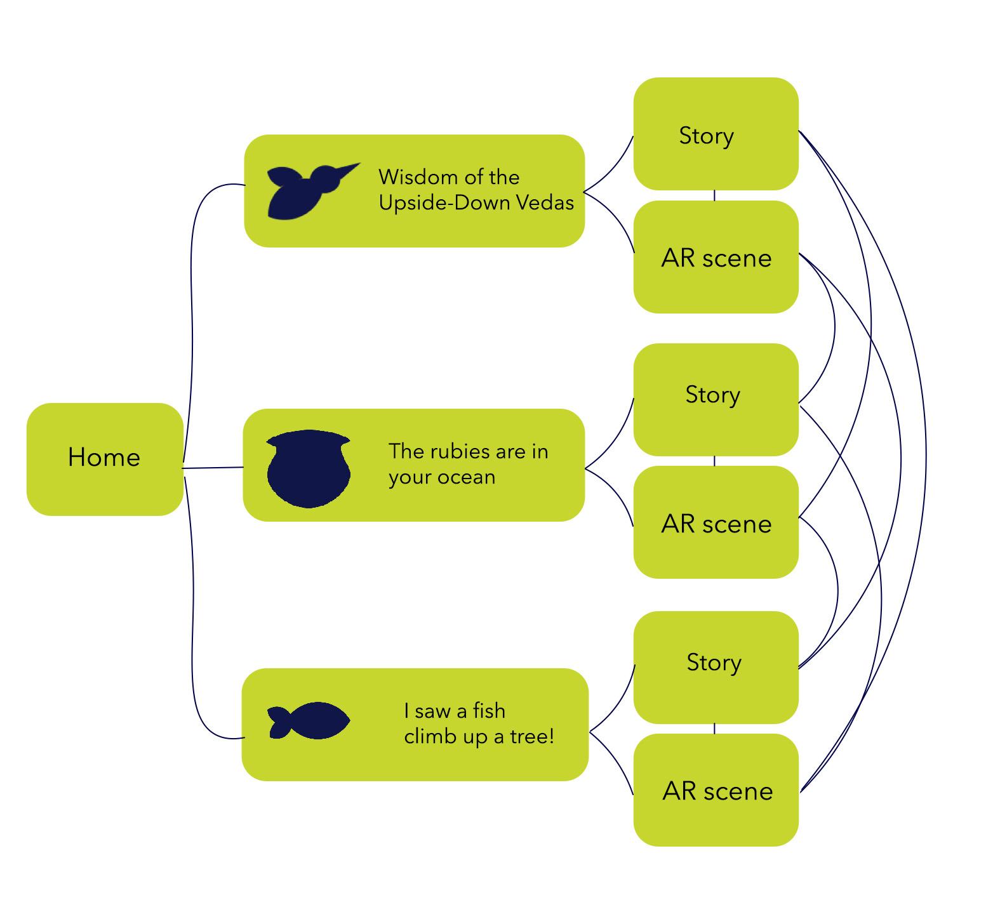

📚 The Indian subcontinent boasts a rich history of mystic poetry, including Bhakti, Sufi, and Baul traditions. The Kabir Project seeks to engage students and adults creatively with this poetic and musical heritage. I conceptualized and prototyped a Mixed Reality mobile application to make mystic poetry and folk music accessible to geographically and contextually distant young audiences. This immersive approach enhances the learning experience and makes it enjoyable for students as well.
Understanding the Users
🖇 The experience is intended to be engaging for urban audiences as well as older children who might require some level of enticement to be introduced to this ancient, mystic poetry These applications will utilise sound, movement and visuals in AR/VR environments to create immersive experiences.
🌱 The focus will be on introducing students and young people to the sound and music of this practice in an experiential manner, using body and space. The target audience would specifically be teenagers and young adults from the ages of 13-21.
The Process
📌 Three poems were chosen, studied and converted to augmented reality scenes keeping in mind the symbolic elements of the poetry. The visual storytelling in the app is kept synonymous with themes of magical realism, and imaginative spaces.The user gets a chance to both read the poetry first and then experience the AR space. I conducted user testing with Kabir Project members and the target demographic, overseeing ideation, research, and prototyping. The AR scenes were created using Unity, while the app screens were created using ProtoPie, and Figma. The 3D assets for unity were created in collaboration with a 3D Artist, Rajath B.
Moodboards and Illustrations
User Flows

App screens
AR space screenshots
Screen Recording
User Testing+Feedback
📌 For my first iteration I used a lot of metallic and bright textures since I wanted the world to be colourful and bold. However the feedback I received was that it was not working in harmony with the context. After this I toned down the textures and chose colours which were more rooted in the context, replacing bright purples with more earthy tones. I kept bright tones for a few elements such as the water, which needed to be bright as translucent shades were not as visible.
📌 The second feedback I received for my following iteration was that the song should be used as a backing track. Originally the song played in one specific area, and became louder as the experience progressed. However this caused the visuals to feel disconnected from the song at times. Thus I changed the sound from 3D to 2D, and played it at a consistent volume in the background. This muffled the smaller sound effects, and those had to be reworked to be heard with the track.
Information design & Gaze interaction
🖇 When creating narratives for each scene, it seemed to be important to include some forms of text to act as guidance. I chose certain paragraphs from the poetry to provide some context for the visuals as well as provide a sort of path for the user to follow. 3D text would be very hard to read in AR , so I went with 2D text that looks like it is lying on top of another object to provide ease of reading. I did not want the text to simply exist in the area so I added a gaze interaction that would allow the text to appear once the user was close enough to the target object. This added an element of surprise and felt as though the context was being found.
Context for use
🖊 This experience would be best introduced in the setting of a Kabir Project Workshop hosted for children, young adults and students. While enticing for newer participants it would also be very fun for those seasoned with mystic poetry. Organisers and teachers could provide a few devices that the app could be run on and the students could explore in pairs. It can also be used in classroom settings alongside traditional readings of Kabir in a Hindi class.